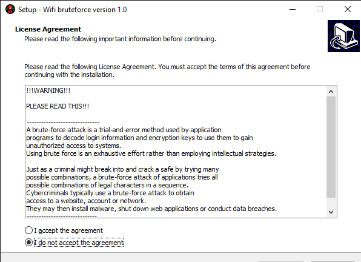
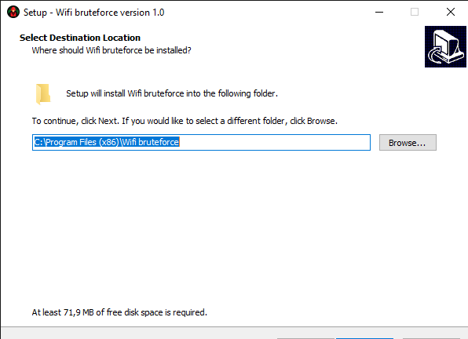
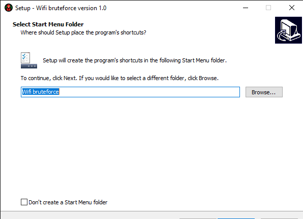
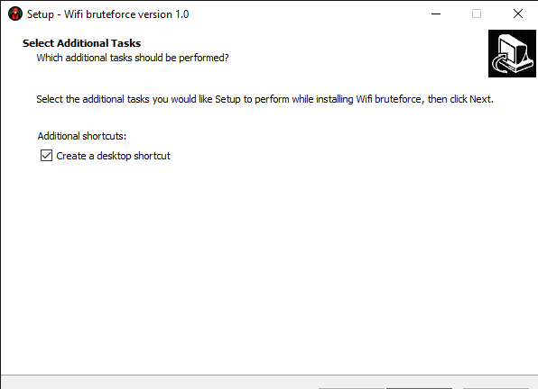
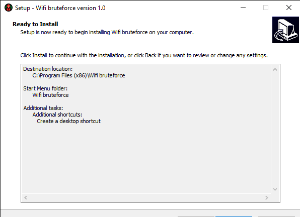

Python 3 install from this site
Module pywifi
Module tkinter
Install
1. Launch the setup.exe file and choose the language
2. After selecting the language and continuing, the following window should appear:

If such a window appears as in the photo above, then you must confirm the terms of the license and continue
3. After clicking the "continue" button, you must specify the path where to save

4. Select start menu folder (or you can use deafult name)

5. You must check the "create a desktop shortcut" box, because if you do not check it, you will have to look for the program in the folder where you installed it, if you have checked it, then a shortcut to the program will appear on your desktop. Do as in the photo

6. Check if everything you specified is correct

7. Final step: Click "install" and wait until the program is installed
How to use?
After installation, a shortcut will appear on the desktop such as in the photo below:

1. Launch the program by double-clicking on the program's shortcut
After starting the program, the following window will appear:

Wifi bruteforce menu (Password generator)
Click button "Password generator" and wait for the generator to start, if the program has started, the following window should appear:

Input how many passwords generate and click Enter
Then password lenght and click Enter
Wait for end of henerating and click Enter
Paswwords that you generate stored in file "passwords.txt"
Wifi bruteforce menu
If you want to hack the WIFI you can use the "Wifi bruteforce"
Before we can start read this license:
!!!WARNING!!!